Episode 2: Comic Festival |
|
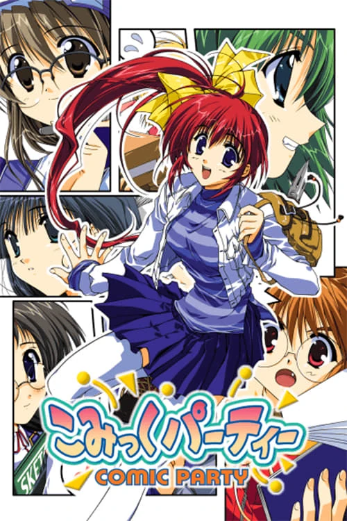
The name of the episode itself is based on the
1999 visual novel "Comic Party", a game about the
production and selling of doujinshi at conventions.
As you'll see in the Episode 2 patch,
the selling of doujinshi ends up playing a
significant role in Comic Festival's story as well.
|
|
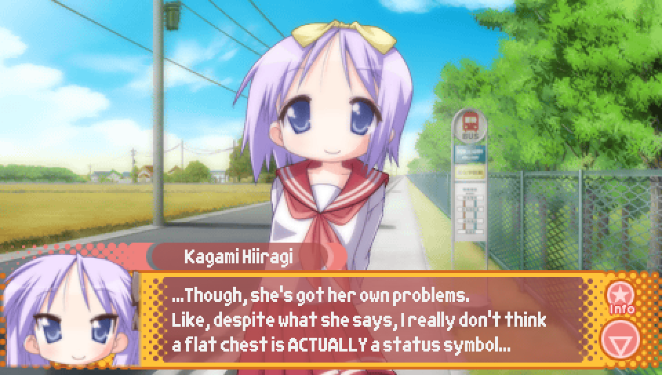
In the intro scene, this line from Kagami is in reference
to the famous line from Konata where she says that a
"A flat chest is a status symbol. They're extremely rare."
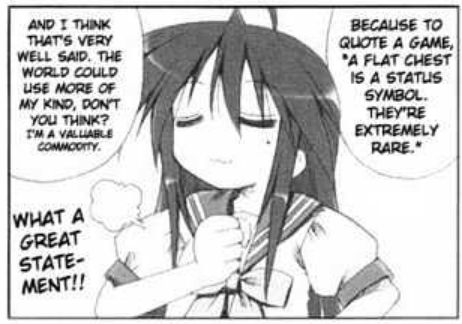
The game she is quoting in that panel is the 2004 visual novel "Shuffle!".
Specifically the character Mayumi Thyme, who takes a lot of pride in her small bust.
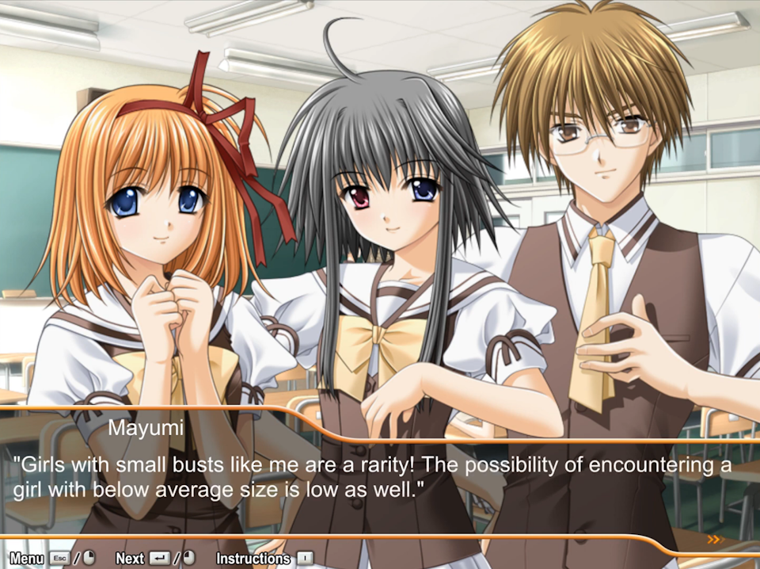
As an additional fun fact, Ryouou Gakuen Outousai was originally supposed
to have a costume for one of the characters inspired by Mayumi Thyme,
as her name appears within an image in the game's files that's used to display
the names of the costumes in the profile menu.
However, no such costume is present in the final game or in the game's files.
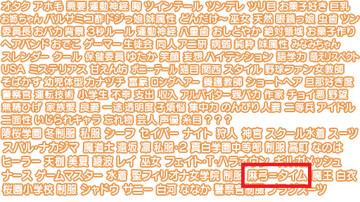
Seen above is the image containing some of the graphics used in the profile menu.
Highlighted is Mayumi Thyme's name written in Japanese, which is placed amongst
the graphics for the names of the other costumes in the game.
|
|
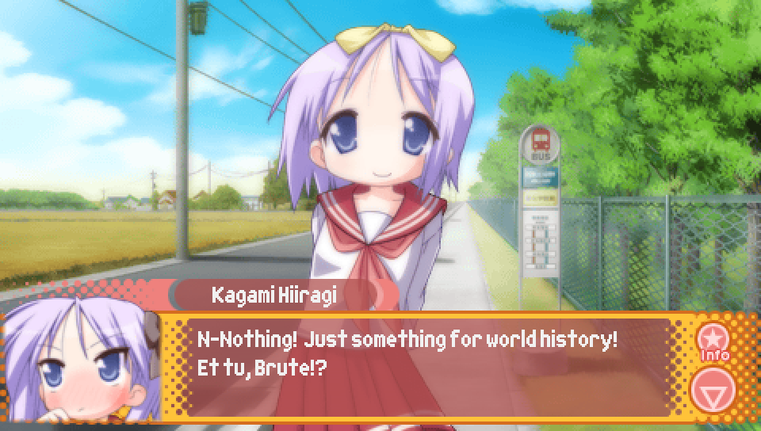
In the intro scene, Kagami's cover-up that she was reviewing
what she learned in world history class has her quoting the famous
line from William Shakespeare's play "Julius Caesar".
Spoken by the titular character and real life Roman Dictator,
Julius Caesar, he says this during his assassination upon
recognizing that his friend, Marcus Junius Brutus, had betrayed him.
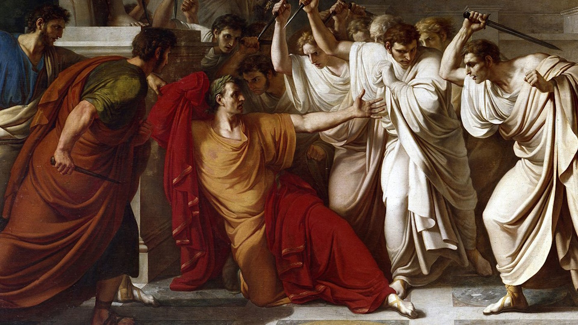
|
|
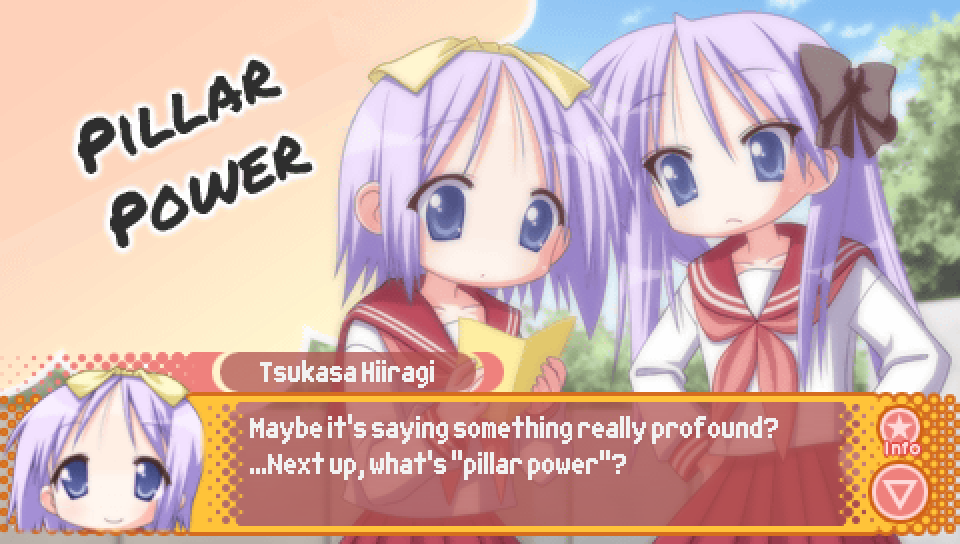
A reference that gets lost in translation. In the intro scene,
when Kagami and Tsukasa are trying to make sense of the writing
on the paper they found on the ground, one of the terms that confuses
them is "pillar power", and they don't end up figuring out what it's
supposed to mean.
However, the Japanese word used is "注力" (chuuriki), which while "pillar power"
is how you would translate it and is what you might understand it to be if you
read it literally, this is likely in reference to the "jinchuuriki" (人注力).
Jinchuuriki are a class of characters in the "Naruto" series who have tailed beasts
sealed within them, with Naruto himself being the most notable of these characters.
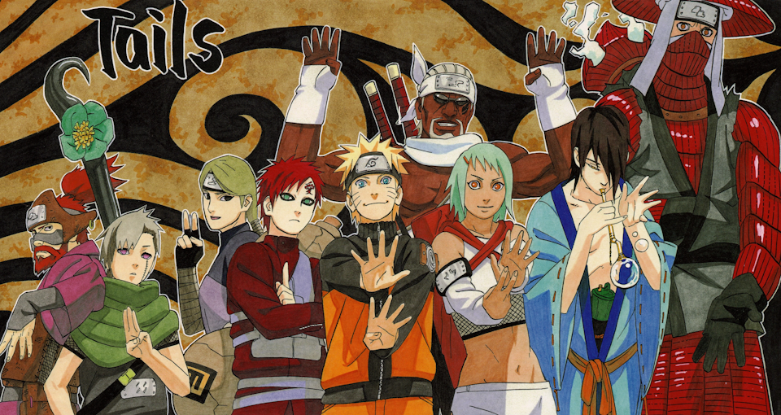
|
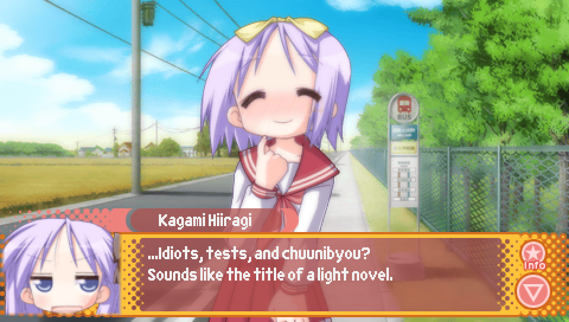
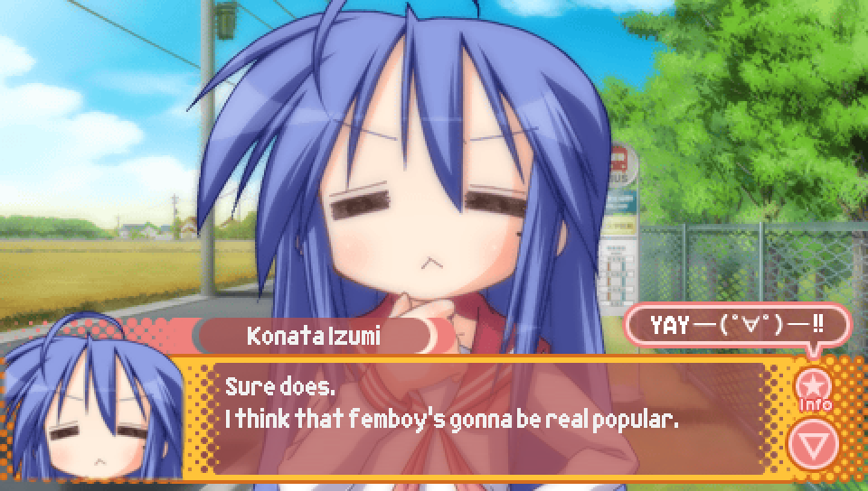
In the intro scene, these two lines are in reference to
the light novel series "Baka to Test to Shoukanjyuu", which translates
in English to "Idiots, Tests, and Summoned Beasts", though is usually
referred to as just "Baka and Test".
The "femboy" Konata is referring to is "Baka and Test" character
Hideyoshi Kinoshita, a male character who has a very feminine appearance.
Notably, Hideyoshi is voiced by Emiri Katou in the anime adaptation,
the same voice actress that voices Kagami.
This is likely the reason Konata references Hideyoshi specifically.
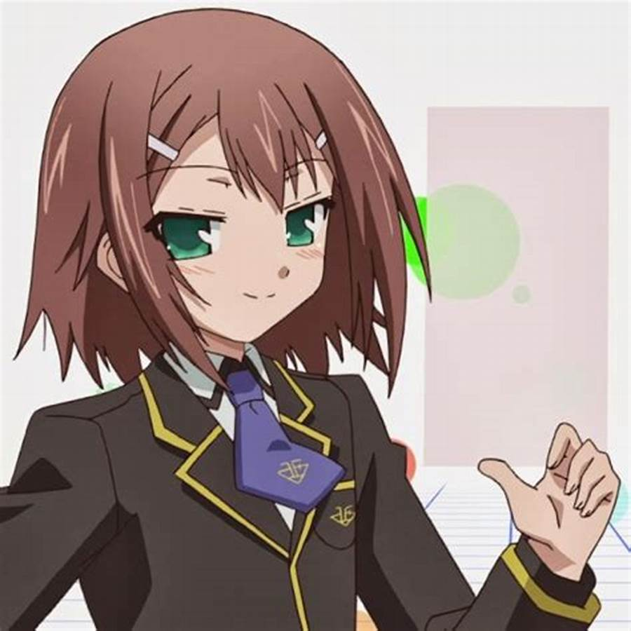
|
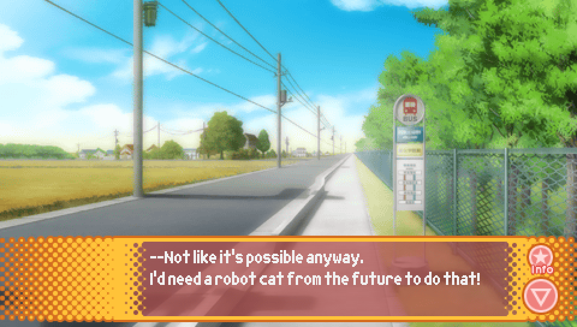
In the second intro scene, this "robot cat from the future"
the protagonist is referring to is the famous children's anime character
"Doraemon". Being from the 22nd century, he is able to procure a variety
of different gadgets capable of all sorts of incredible things, thus why
the protagonist thinks only with his help could he make time stop.

|
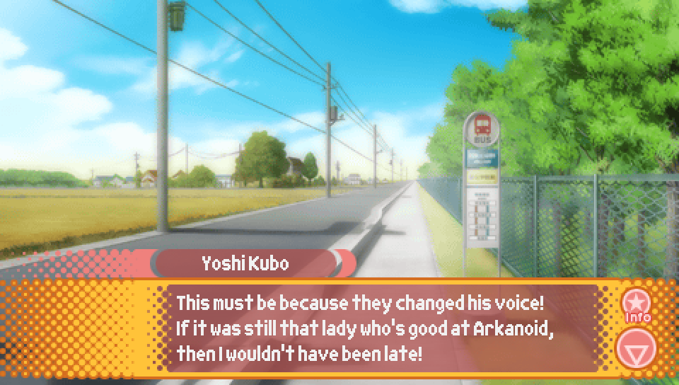
In the second intro scene, following the above "Doraemon" reference,
the protagonist blames his lateness on Doraemon's voice being changed.
This is in reference to the fact that Nobuyo Oyama, who had voiced Doraemon
since 1979, retired from the role in 2005, to the disappointment of many who
loved her performance.
Nobuyo Oyama was also known for being a fan of the arcade game "Arkanoid",
and was able to clear the game while spending only a single coin.
A video of Nobuyo Oyama playing "Arkanoid".
https://www.youtube.com/watch?v=u00VNVPO4tw
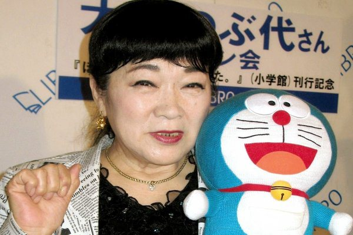
Sadly, Nobuyo Oyama passed away in September of 2024.
|
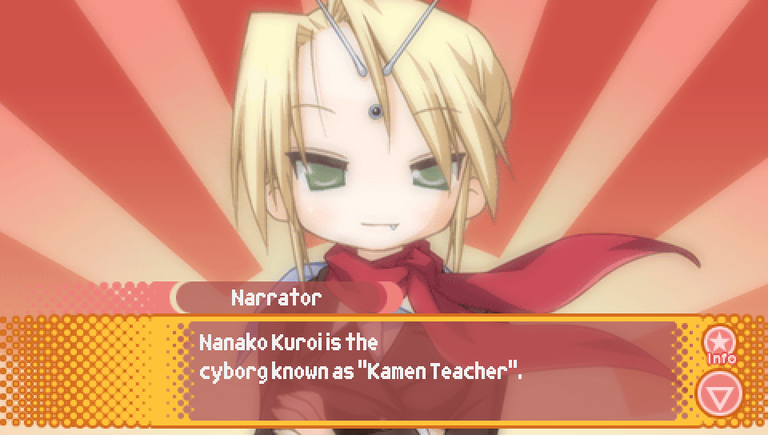
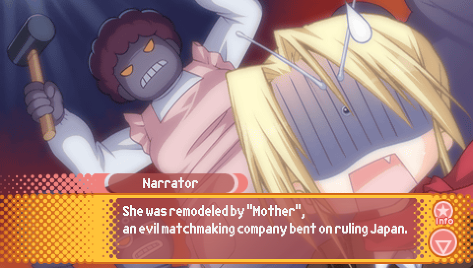
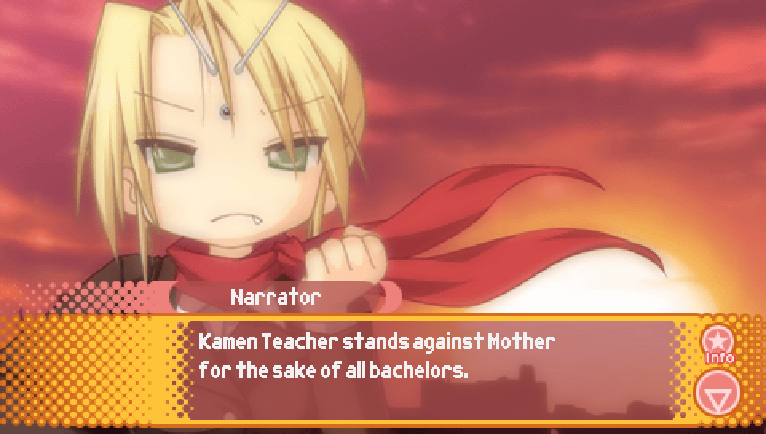
This sequence with Nanako during the scene where the protagonist
ends up in the school infirmary is a reference to the opening narration
of the 1971 TV series "Kamen Rider" seen at the beginning of episodes starting with episode 5.
https://www.youtube.com/watch?v=kQhqmgu1S5c&t=70s

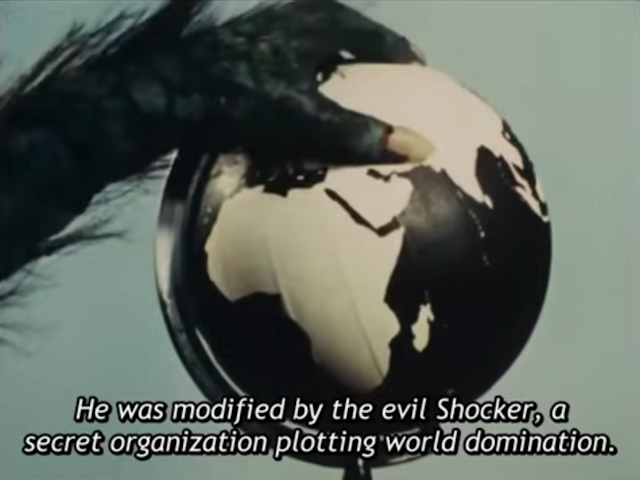
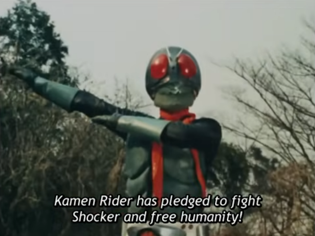
Additionally, "Kamen Teacher" is itself the name of a manga that ran from 2006 to 2007.
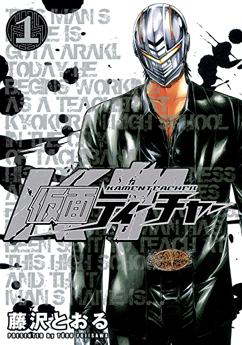
|
|
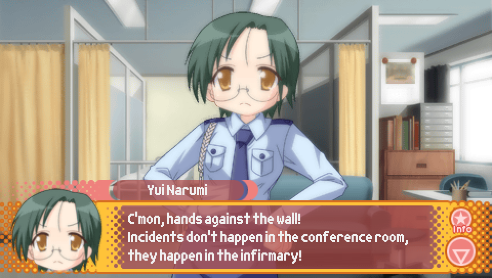
This line from Yui during the infirmary scene if the protagonist chooses
to tell her to arrest Nanako is in reference to a line from the 1998 film
"Bayside Shakedown", based on the 1997 TV drama of the same name.
This line comes from a moment in the film where protagonist Shunsaku Aoshima
snaps at his superiors saying "incidents don't happen in the conference room, they happen on the scene!".
The moment from the film the line comes from can be seen here at 0:35
https://www.youtube.com/watch?v=qNWqQ3eVyns
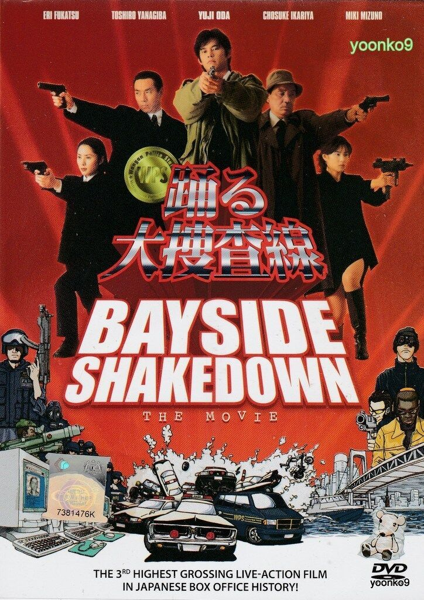
|
|
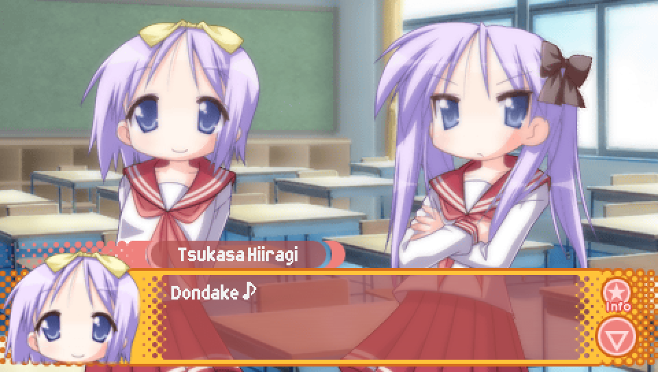
Tsukasa's catchphrase of "dondake!" seen during the lunch scene on the first day is derived from
the Japanese word "doredake", meaning "how much?". However, it was mostly just used by high school girls
as an exclamation of surprise and doesn't necessarily mean the person is asking "how much?".
The catchphrase originates from Japanese make-up artist "Ikko", but also
was popularized from its appearance in the anime "Gintama", where it's also used as just a silly exclamation.
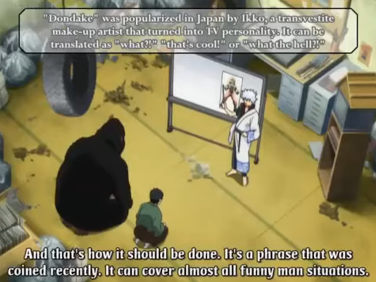
The clip from Gintama can be seen here: https://www.youtube.com/watch?v=6kdZEcZFIkA
|
|